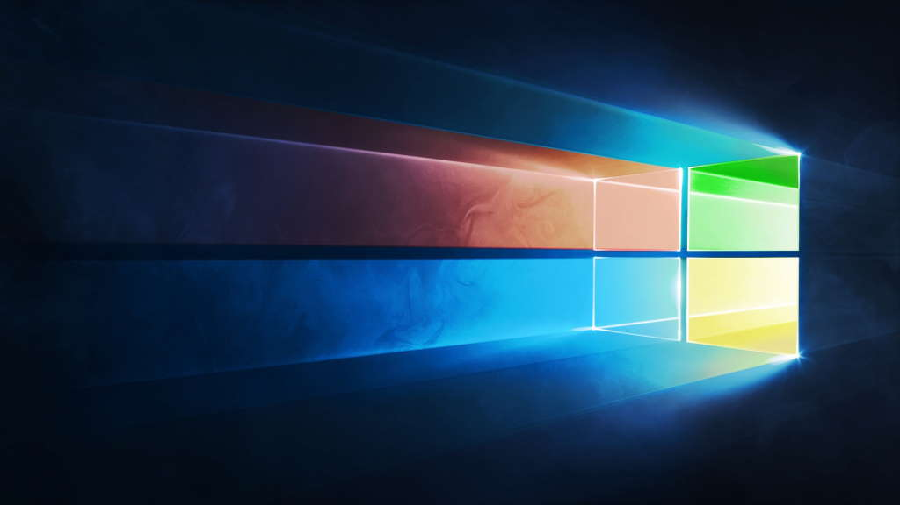

Microsoft Windows (ou simplesmente Windows) é uma família de sistemas operacionais desenvolvidos, comercializados e vendidos pela Microsoft. É constituída por várias famílias de sistemas operacionais, cada qual atendendo a um determinado setor da indústria da computação, sendo que o sistema geralmente é associado com a arquitetura IBM PC compatível. As famílias ativas do Windows incluem Windows NT, Windows Embedded e Windows Phone; estes podem abranger subfamílias, como Windows CE ou Windows Server.
Entre as famílias Windows extintas estão o Windows 9x, o Windows 10 Mobile e o Windows Phone. A Microsoft introduziu um ambiente operacional chamado Windows em 20 de novembro de 1985, como um shell para MS-DOS, em resposta ao crescente interesse em interfaces gráficas de usuário (GUIs).[1]
O Microsoft Windows passou a dominar o mercado de computadores pessoais (PC) do mundo, com mais de 90% de participação de mercado, superando o Mac OS, que havia sido introduzido em 1984. A Apple chegou a ver o Windows como uma invasão injusta em sua inovação no desenvolvimento de produtos GUI, como o Lisa e o Macintosh (eventualmente resolvido na Justiça em favor da Microsoft em 1993). Nos PCs, o Windows ainda é o sistema operacional mais popular.
No entanto, em 2014, a Microsoft admitiu a perda da maioria do mercado global de sistemas operacionais do sistema operacional móvel Android,[2] devido ao enorme crescimento nas vendas de smartphones. Em 2014, o número de dispositivos Windows vendidos era menos de 25% dos dispositivos Android vendidos. Essas comparações, no entanto, podem não ser totalmente relevantes, já que os dois sistemas operacionais visam plataformas tradicionalmente diferentes. Em outubro de 2021, a versão mais recente do Windows para PCs, tablets, smartphones e dispositivos embutidos é o Windows 11. As versões mais recentes para servidores é o Windows Server 2019. Uma versão especializada do Windows é executada no console de jogos Xbox One, Xbox Series X e Series S.[3]
Reunião em Belarus terminou com aperto de mãos. Tropas russas mantêm certo a cidades estratégicas
O porta-voz da delegação ucraniana, Mykhailo Podolyak, disse que a terceira rodada de negociações com a Rússia acontecerá no começo da próxima semana.
Nesta quinta-feira, as delegações chegaram a um acordo para a criação de um corredor humanitário para a retirada de civis das áreas de conflito e a entrada de medicamentos.
Reunião em Belarus terminou com aperto de mãos. Tropas russas mantêm certo a cidades estratégicas
paragrafo2
paragrafo3
Teste inclusao
Teste inclusao2
Reunião em Belarus terminou com aperto de mãos. Tropas russas mantêm certo a cidades estratégicas

O que sabemos até agora:
A Agência Internacional de Energia Atômica, ligada às Nações Unidas, pediu que as tropas russas e ucranianas deixem de combater na área próxima à da usina.
3ª rodada de negociação entre Rússia e Ucrânia continua na próxima semana
Sobe para 33 o número de mortos em Chernihiv
Pelo menos 33 corpos foram recuperados dos escombros após ataques aéreos das forças russas na cidade ucraniana de Chernihiv nesta quinta-feira, disseram os serviços de emergência ucranianos.
Uma estimativa anterior falava em 22 mortos.
escritório de direitos humanos da Organização das Nações Unidas (ONU) disse nesta quinta-feira que confirmou que 249 civis foram mortos e 553 feridos na Ucrânia durante a primeira semana do conflito após a invasão da Rússia.
O número, até a meia-noite de quarta-feira, representa uma alta em relação aos 227 mortos e 525 feridos informados no relatório anterior de um dia atrás.
Negociadores russos e ucranianos definiram uma 3ª rodada de negociações e a criação de um corredor humanitário
Putin disse que a "operação especial ocorre como esperado"
Ucrânia: Russos abriram fogo em área próxima à usina nucleary afirmou que "a única maneira de parar a guerra" é com ele falando diretamente com Putin
Putin diz a Macron que Rússia alcançará seus objetivos na Ucrânia; "erro grave", retrucou o francês
EUA e Reino Unidos impuseram sanções a oligarcas russos e suas famílias
Russos e ucranianos combatem em área próxima à de uma usina nuclear.